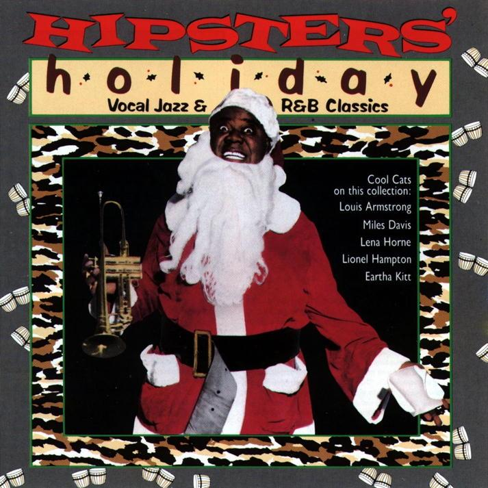

3 min read

R&B singer Mabel Scott recorded this little number in 1948, and it's been making its way onto stylish Christmas compilations ever since. The song was written by Leon René, who also penned “When the Swallows Come Back to Capistrano” and “Rockin' Robin”.
Cash Box magazine reviewed the single in 1949, and it's hard to argue with their summation:
The great Mabel Scott, hotter than a ten dollar pistol, offers up a sure coin culler if there ever was one with this hunk of wax. Mabel really lets go and does this bit up royally. Ditty has loads of drive and beat in it, with a ton of depth in Mabel's pipes ringing true to round out a terrific side.
This is such a great recording that it's hard to find enough good things to say about it. If you haven't heard it yet, listen to it now.
The whole thing starts out with drums and bass and horns and bells, immediately swinging. There's a clever little quote from “Jingle Bells,” the horns mess around a bit, then descend and pause, allowing Scott to make her vocal entrance.
We're only 8 seconds in at this point, and this recording has already proven itself smarter than 95% of the other holiday recordings you'll hear these days.
But now Scott starts singing, and she immediately takes center stage. There's nothing tentative or delicate about her approach: she owns this thing from the first note to the last. This song is all about rhythm and energy and human spirit, and that's what Scott is pumping out during every second of her delivery.
Well look-a-here Jack,
Coming down the track,
He's got rhythm in his feet
But nothing in his sack.He's the boogie Woogie Santa Claus,
The Boogie Woogie Santa Claus.
The Boogie Woogie Santa
Comes to town every Christmas day.He lives up in the mountains
Like a hermit in a cave.
He never had a haircut
And he never took a shave.He's the boogie Woogie Santa Claus,
The Boogie Woogie Santa Claus,
The Boogie Woogie Santa
Will boogie all your blues away.Rock, rock, rock, Mister Santa!
Jump, jump, jump Mister Santa!He's got no presents for your tree,
No candy for your socks,
But when he starts to boogie,
The whole town rocks!Rock, Mr. Santa!
Mama get your hat,
Put your best dress on,
We're gonna really jump for joy,
On the Christmas morn',With the Boogie Woogie Santa Claus,
The Boogie Woogie Santa Claus.
The Boogie Woogie Santa
Will Boogie all your blues away.Rock, rock, rock, Mister Santa!
Jump, jump, jump Mister Santa!The Boogie Woogie Santa
Will Boogie all your blues away!
Along the way there are more horns, including a spirited sax break, and the whole thing still clocks in at under two-and-a-half minutes.
Pure genius.
An interesting note about the lyrics: this is the first recording I'm aware of that uses a sort of “musical fool” as its central character. You can hear a similar character appear again in “Happy Jack” by The Who, “The Fool on the Hill” by The Beatles, “Lather” by The Jefferson Airplane, and “Jack the Idiot Dunce” by The Kinks.
Next: “The Christmas Song”
Or see the complete list of Christmas Favorites from The Practical Utopian.